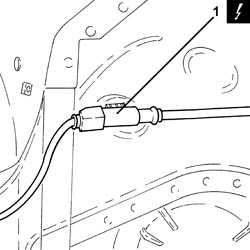
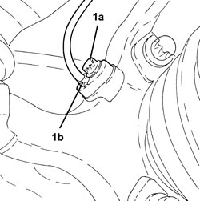
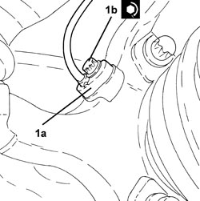

3340A30 RPM SENSOR (ONE) FOR ONE FRONT WHEEL, LEFT OR RIGHT - R.R.
- Path
- Procedures > 33 BRAKES > 3340 ANTI-LOCK BRAKING SYSTEM (ABS) > 3340A ABS CHECK/ADJUSTMENT DEVICES > 3340A30 RPM SENSOR (ONE) FOR ONE FRONT WHEEL, LEFT OR RIGHT - R.R.
- Kind
- repair procedure (removal / refitting; the operation number is the code)
- Applies to
- all engines; all production periods
- Interactive page
- https://sloeber94.github.io/elrnDB/#/939010771
Applies to: all engines; all production periods
 Removing
Removing
 Refitting
Refitting- Position the vehicle on a lift.
- Make sure that the ignition key is in the OFF position, then disconnect the battery terminal (-).
Description | Connector | |
|---|---|---|
- | Battery |
Op. 4450B02 LEFT FRONT WHEEL - R.R
Op. 7055B90 LEFT FRONT WHEEL ARCH LINER - R.R.
1. Disconnect the electrical connection for the front wheel rpm sensor.
Description | Connector | |
|---|---|---|
1 | Left front wheel sensor for ABS |

Applies to: all engines; all production periods
1. Unscrew bolt (1a) and remove the left front wheel rpm sensor (1b).

Applies to: all engines; all production periods
Refitting
Removing1. Position the left front engine rpm sensor (1a) in its housing and secure it tightening the bolt (1b) to the recommended torque.
Component | Fastening | dia | Value (daNm) | Validity |
|---|---|---|---|---|
Front wheel rpm sensor | Bolt | M6 | (steering knuckle side) 0.7 - 1.1 |

Applies to: all engines; all production periods
- Connect the electrical connection for the front wheel rpm sensor.
Op. 7055B90 LEFT FRONT WHEEL ARCH LINER - R.R.
Op. 4450B02 LEFT FRONT WHEEL - R.R
- Connect the negative battery terminal.
- Remove the vehicle from the lift.
Topics linked from this page (4)
- 4450B02 LEFT FRONT WHEEL - R.R
- 7055B90 LEFT FRONT WHEEL ARCH LINER - R.R.
- A001 BATTERY
- K070 LEFT FRONT WHEEL SENSOR FOR ABS